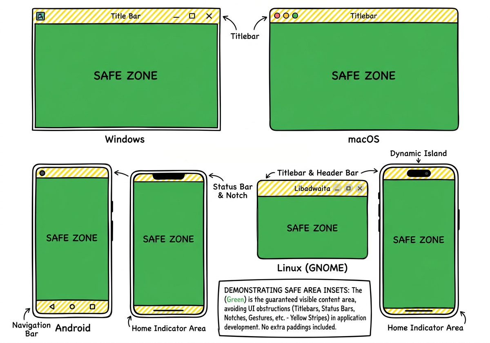

AWindow#
Represents a window in the underlying windowing system.
| Header: | #include <AUI/Platform/AWindow.h> |
| CMake: | aui_link(my_target PUBLIC aui::views) |
Detailed Description#
Opening a window#
Create an AWindow, put views into it with AWindow::setContents and call AWindow::show:
#include <AUI/Platform/Entry.h>
#include <AUI/Platform/AWindow.h>
#include <AUI/View/ALabel.h>
AUI_ENTRY {
auto window = _new<AWindow>("Hello AUI", 300_dp, 200_dp);
window->setContents(Centered { Label { "Hello, world!" } });
window->show();
return 0;
}
Every window implicitly holds the application (see AApplication::Hold), so by default the application keeps
running while at least one window is alive. This is adjustable: create an explicit hold with
AApplication::hold() to keep the application running after the last window is closed, or release it to allow the
application to exit. The window is owned by AUI while it is shown, so
you don't have to store the pointer; store it only if you want to talk to the window later.
To open another window from the application (i.e., a settings dialog), do the same from any slot or callback on the UI thread:
connect(settingsButton->clicked, this, [this] {
auto settings = _new<AWindow>("Settings", 400_dp, 300_dp);
settings->setContents(Vertical { Label { "Settings go here" } });
settings->show();
});
AWindow(title, width, height) creates an ordinary window with the OS-drawn titlebar. Anything else (a parent
window, modality, custom titlebar, fixed size) is configured with AWindow::Init, see below.
To close the window from code, use AWindow::close.
Architecture#
This document covers AUI's window management system, which provides cross‑platform window creation, lifecycle management, and event handling. The system abstracts native windowing APIs across Windows, Linux, macOS, Android, and iOS platforms while maintaining a unified interface for application developers.
AWindow is the concrete implementation of a UI surface that is backed by a native
window. It inherits from ASurface – the generic surface API that can be used by other windowing API implementations
(i.e., SDL3 or a game engine).
AWindow owns an IRenderingContext instance. The context bridges the window to
the shared IRenderer – the actual rendering engine. The renderer performs all
drawing primitives and is shared across all windows. The context handles
platform‑specific tasks such as buffer swapping, resizing, and screenshot capture.
graph TD
%%{init: {'theme': 'default'}}%%
classDef platformSpec fill:none,stroke:#888,stroke-width:2,stroke-dasharray:5,5;
%% Sub‑graph definition (use an ID without spaces)
subgraph PlatformSpecifics
AWindow1(AWindow) -->|has| IRenderingContext1(IRenderingContext)
AWindow2(AWindow) -->|has| IRenderingContext2(IRenderingContext)
AWindow3(AWindow) -->|has| IRenderingContext3(IRenderingContext)
end
%% Apply the class to the sub‑graph
class PlatformSpecifics platformSpec
%% Connections to the renderer
IRenderingContext1 -->|uses| IRenderer
IRenderingContext2 -->|uses| IRenderer
IRenderingContext3 -->|uses| IRendererFor more details on the rendering, see Rendering Engine.
Creation, decorations and modality#
AWindow is created with AWindow::Init - an aggregate describing everything that can't be changed afterwards:
_new<AWindow>(AWindow::Init {
.title = "Settings",
.width = 400_dp,
.height = 300_dp,
.parent = AWindow::Init::Parent { .window = *this, .modal = true },
.decoration = AWindow::Init::DecorationDefault { .buttons = { .minimize = false, .maximize = false } },
.resizable = false,
});
Meaningless combinations do not compile: modality exists only as a part of parent, window buttons exist only in
decorations which have them.
| Decoration | What it is | Replaces |
|---|---|---|
DecorationDefault { buttons } |
Ordinary OS-drawn titlebar and border. | WindowStyle::DEFAULT, NO_MINIMIZE_MAXIMIZE |
DecorationExtended { buttons } |
Window contents extend into the titlebar. Native window controls are kept where the platform has them. | ACustomCaptionWindow |
DecorationBorderless { shadow } |
No titlebar, no buttons. Native border, shadow and rounded corners are kept where possible. | ACustomWindow, NO_DECORATORS |
A modal window blocks user input of its parent until closed. Having parent without modal produces an ordinary child
window - it does not block anything, even when it is not resizable.
Titlebar of Extended and Borderless windows#
declarative::Titlebar is a view you place into the window contents yourself; it is not created by the window. It is both a
drag handle and a layout container for the titlebar contents. What it does depends on the decoration:
DecorationExtended |
DecorationBorderless |
|
|---|---|---|
| Drags the window | yes | yes |
| Double click maximizes/restores | yes | yes |
| Window controls (close, minimize, maximize) | yes: native or drawn by AUI, according to buttons |
no, declarative::Titlebar is just your contents |
| Space reserved for native controls | yes (AWindow::windowControlsInsets) |
no, zero |
Without declarative::Titlebar a Borderless window can't be moved by the user at all, and an Extended window has no draggable area.
What can be put into declarative::Titlebar of a Borderless window: any view. Contents are laid out horizontally, the first and
only child stretches over the full width. Put a label for a plain caption, or a Horizontal with a logo, title, search
field, tool buttons and so on:
auto w = _new<AWindow>(AWindow::Init {
.title = "Custom window without caption",
.width = 400_dp,
.height = 300_dp,
.decoration = AWindow::Init::DecorationBorderless {},
});
w->setContents(Vertical {
// an opaque caption strip: the window is dragged by it
Titlebar { Label { "Drag me" } AUI_OVERRIDE_STYLE { Padding { 4_dp } } },
Centered { Label { "Window contents" } } AUI_LET { it->setExpanding(); },
});
w->show();
Nothing is drawn by the window itself, so everything about the look (background, height, padding, border) is up to you
and set by ASS on declarative::Titlebar or its contents. Interactive views inside the titlebar work as usual: buttons
(AButton) and views with .override-title-dragging ASS class are not drag areas, everything else under declarative::Titlebar
(labels, spacers, empty space, text fields included) starts window dragging.
With DecorationExtended the window contents extend under the system titlebar, so declarative::Titlebar is typically overlaid on
top of the contents (see example for a complete example with a blurred backdrop):
setContents(Stacked {
content,
Vertical {
Titlebar { Horizontal { Label { "My app" } } },
SpacerExpanding {},
},
});
Window title inside the titlebar#
You don't have to imitate the title of each OS yourself. Put declarative::WindowTitle into
declarative::Titlebar (Titlebar {} without contents contains it) to mark where the title is, and the OS draws it
there, the same way it does in its own titlebars, wherever it can:
| Who draws the title | Where | |
|---|---|---|
| macOS | AppKit (the native title) | centered over the window horizontally, centered in declarative::Titlebar vertically |
| Linux GTK/adw | GTK (the native header bar title) | like in a header bar: centered over the window while it fits into declarative::WindowTitle, otherwise shifted into it |
| Windows | AUI: DWM does not draw the caption text of windows with the extended client area | left-aligned label |
| Linux X11, Borderless windows | AUI | centered label |
The native title follows the system font, color and the inactive window look. It is drawn over the window contents,
so neither ASS nor other views can affect it; it is shown only while declarative::WindowTitle is present (see
AWindow::hasNativeWindowTitle). Where AUI draws the title, style it with t<AWindowTitle>().
The result looks like an ordinary titlebar, but you control its background and can place your own views around the title:
setContents(Stacked {
content,
Vertical {
Titlebar {}, // looks like the OS titlebar
SpacerExpanding {},
},
});
The window is the single source of truth for the title: AWindow::title is a property; the native title is the
window title itself, and the AUI-drawn declarative::WindowTitle is bound to it. Change the title with AWindow::setTitle (or title() = ...), and the
taskbar, window switcher and the title in your titlebar update together. Do not duplicate the title in a Label
with a string literal. If you need a label of your own (for example, with a prefix), bind it to the property:
Titlebar {
Horizontal {
Icon { ":img/logo.svg" },
Label { .text = AUI_REACT("{} - Editor"_format(*window->title())) },
},
}
If you don't need contents in the titlebar area at all, use DecorationDefault: the OS draws the titlebar
entirely.
What Titlebar is and how its size is determined#
declarative::Titlebar is not just a handle: it is a Horizontal { window controls (start), contents, window controls (end) }
container which stretches horizontally over the whole width of its parent. Its size is not set by the window or the
platform, it is regular AUI layout:
- width: expanding, takes all the available width of the parent;
- height: the maximum of the contents' height and the window controls' height (native controls height from
AWindow::windowControlsInsetsor AUI-drawn buttons height). To make the titlebar taller, put a taller view or padding into it. In a Borderless window it is just the height of the contents.
The rectangle occupied by declarative::Titlebar after layout is what the window treats as the caption area: it is used for
dragging and, on macOS and GTK, to vertically center the native window controls inside it.
AWindow::windowControlsInsets is a property reporting the space occupied by native window controls (traffic lights on
macOS, GtkWindowControls on GTK); AWindowControls uses it to keep the contents out of their way.
Lifecycle#
Only title and resizability can change at runtime:
| What | API |
|---|---|
| title | AWindow::title property (AWindow::setTitle, titleChanged) |
| resizability | AWindow::setResizable / AWindow::isResizable |
| visibility | AWindow::show / AWindow::hide, reversible |
| closing | AWindow::close, terminal |
close() works the same on all platforms: closed is emitted exactly once, the modal parent is unblocked, the native
window is destroyed. A closed window can't be shown again - create another one. Calling show() on a closed window logs
an error and does nothing. Closing by the close button calls AWindow::onCloseButtonClicked, which calls close();
override it to refuse closing.
Native handles#
AWindow::nativeHandle returns the underlying native window object, which can be passed to platform APIs AUI does not
wrap (DWM attributes, NSWindow tweaks, embedding into foreign toolkits, etc.). Its type is AWindowNativePtr
and depends on the platform:
| Platform | AWindowNativePtr |
What it points to |
|---|---|---|
| Windows | HWND |
the window itself |
| macOS | void* |
NSWindow* (AUIView is its content view) |
| Linux, GTK4 / libadwaita backend | std::uintptr_t |
GtkWindow*; GtkPopover* for popups |
| Linux, X11 backend | std::uintptr_t |
X11 Window (XID) |
| Android, iOS, web | jobject / void* |
not available: always null, the surface is owned by the activity, view controller or canvas |
The handle is null until the native window is created and after it is destroyed (see AWindow::close). It is owned by
AUI: don't destroy it, don't keep it past AWindow::closed. Use it from the UI thread only.
#include <AUI/Platform/AWindow.h>
void tweakNativeWindow(AWindow& window) {
#if AUI_PLATFORM_WIN
HWND hwnd = window.nativeHandle();
SetWindowTextW(hwnd, L"Hello from Win32");
#elif AUI_PLATFORM_APPLE
// in an Objective-C++ (.mm) file:
NSWindow* nsWindow = static_cast<NSWindow*>(window.nativeHandle());
nsWindow.level = NSFloatingWindowLevel;
#elif AUI_PLATFORM_LINUX
// see below
#endif
}
Linux#
Linux has two core platform APIs, chosen at runtime (see APlatformAbstractionOptions); on the application side
there is no compile-time way to tell which one is active, so the same uintptr_t means a different thing depending
on the backend. Decide which one you have yourself, i.e., by pinning
APlatformAbstractionOptions::initializationOrder to a single backend before creating windows:
// X11 only
APlatformAbstractionOptions::set({ .initializationOrder = { APlatformAbstractionOptions::X11{} } });
...
Window xid = static_cast<Window>(window.nativeHandle());
Display* display = XOpenDisplay(nullptr); // XIDs are valid on any connection to the same X server
// GTK4 / libadwaita only
APlatformAbstractionOptions::set({ .initializationOrder = { APlatformAbstractionOptions::Gtk4{} } });
...
auto* gtkWindow = reinterpret_cast<GtkWindow*>(window.nativeHandle());
AUI loads GTK dynamically, so it does not require GTK headers to build your application; include them yourself if you use the handle. To reach lower-level objects, go through GTK:
GdkSurface*:gtk_native_get_surface(GTK_NATIVE(gtkWindow))- Wayland
wl_surface*:gdk_wayland_surface_get_wl_surface(gdkSurface)(whenGDK_IS_WAYLAND_SURFACE) - X11
Windowunder GTK (i.e., GTK running on X11 or Xwayland):gdk_x11_surface_get_xid(gdkSurface)(whenGDK_IS_X11_SURFACE)
On a Wayland session without pinning the backend you will get the GTK flavor; the X11 backend works through Xwayland there and its handle is an XID.
Platform specifics#
| Windows | macOS | Linux GTK/adw | Linux X11 | Android, iOS, web | |
|---|---|---|---|---|---|
Default buttons |
window style bits; disabled close is greyed | style mask | decoration-layout of the header bar |
Motif hints (window manager may ignore) | ignored |
Extended window controls |
drawn by AUI, hit-tested natively (snap layouts) | native traffic lights, aligned to declarative::Titlebar |
native GtkWindowControls |
drawn by AUI | none |
Extended title (declarative::WindowTitle) |
drawn by AUI | native, aligned to declarative::Titlebar vertically |
native header bar title | drawn by AUI | drawn by AUI |
Borderless shadow |
DWM frame | system shadow | CSD shadow | not available, shadow is ignored |
ignored |
parent |
owner window | child window | transient | transient | ignored |
modal |
parent is disabled | parent ignores input | gtk_window_set_modal |
_NET_WM_STATE_MODAL, parent ignores input |
ignored |
Known gaps (not related to decorations): minimize/maximize are stubs on macOS, there is no minimized signal on all
platforms, moveToCenter is empty on Linux X11.
Examples#
examples/7guis/cells/src/main.cpp
7GUIs Cells — Spreadsheet processor (Excel).
private:
_<State> mState;
};
class CellsWindow : public AWindow {
public:
CellsWindow() : AWindow("AUI - 7GUIs - Cells", 500_dp, 400_dp) {
setContents(Centered {
AScrollArea::Builder()
.withContents(Horizontal { _new<CellsView>(_new<State>()) })
examples/7guis/flight_booker/src/main.cpp
7GUIs Flight Booker — Flight Booker.
// Create state instance
_<State> state = _new<State>();
// Create window
auto window = _new<AWindow>("AUI - 7GUIs - Book Flight", 150_dp, 50_dp);
// Set contents
window->setContents(Centered {
Vertical {
_new<ADropdownList>(AListModel<AString>::make({ "one-way flight", "return flight" })) AUI_LET {
examples/7guis/circle_drawer/src/main.cpp
7GUIs Circle Drawer — Undo, redo, dialog control.
examples/7guis/timer/src/main.cpp
7GUIs Timer — Timer example.
examples/7guis/crud/src/main.cpp
7GUIs CRUD — Create/Read/Update/Delete example.
examples/7guis/counter/src/main.cpp
7GUIs Counter — Simple counter.
examples/7guis/temperature_converter/src/main.cpp
7GUIs Temperature Converter — Fahrenheit to Celsius and vice versa.
examples/app/minesweeper/src/MinesweeperWindow.cpp
Minesweeper Game — Minesweeper game implementation driven by ass.
examples/app/fractal/src/JumpToCoordsWindow.h
Fractal Example — Fractal viewer application demonstrating usage of custom shaders.
examples/app/game_of_life/src/main.cpp
Game of Life — Game of Life implementation that uses advanced large dynamic data rendering techniques such as ITexture, AImage to be GPU friendly. The computation is performed in AThreadPool.
examples/app/notes/src/main.cpp
Notes App — Note taking app that demonstrates usage of AListModel, AProperty, user data saving and loading.
examples/ui/minimal_ui_assets_xmake/src/MainWindow.h
Minimal UI Template XMake with Assets — Minimal UI boilerplate template XMake with AUI Assets.
examples/ui/minimal_ui_xmake/src/MainWindow.h
Minimal UI Template XMake — Minimal UI boilerplate template XMake.
examples/ui/contacts/src/main.cpp
AUI Contacts — Usage of AUI_DECLARATIVE_FOR to make a contacts-like application.
examples/ui/opengl_simple/src/main.cpp
OpenGL Example — Demonstrates how to integrate custom OpenGL rendering with AUI Framework.
},
.flags = ARenderContextFlags::NO_SMOOTH | ARenderContextFlags::NO_VSYNC,
});
auto window = _new<AWindow>("OpenGL Demo", 600_dp, 300_dp);
auto state = _new<State>();
window->setContents(
Stacked {
_new<MyRenderer>(state) AUI_OVERRIDE_STYLE { Expanding() },
Horizontal::Expanding {
examples/ui/customwindow_titlebar_blur/src/main.cpp
Custom window titlebar blur — Window with extended decoration, whose titlebar blurs the contents scrolled under it.
examples/ui/infinite_lazy_list/src/main.cpp
Infinite Lazy List — Usage of AUI_DECLARATIVE_FOR to make an infinite lazy list.
};
}
AUI_ENTRY {
auto window = _new<AWindow>("Infinite Lazy List", 200_dp, 300_dp);
window->setContents(Stacked { AScrollArea::Builder().withContents(myLazyList(_new<State>())) });
window->show();
return 0;
}
examples/ui/embedded_sdl/src/main.cpp
SDL3 — This code demonstrates how to integrate the AUI Framework with SDL3 to create a window with OpenGL rendering.
return SDL_GetClipboardText();
}
AMessageBox::ResultButton messageBoxShow(
AWindow* parent, const AString& title, const AString& message, AMessageBox::Icon icon,
AMessageBox::Button b) override {}
};
/// [EmbedRenderingContext]
struct EmbedRenderingContext : IRenderingContext {
examples/app/minesweeper/src/NewGameWindow.h
Minesweeper Game — Minesweeper game implementation driven by ass.
examples/app/minesweeper/src/MinesweeperWindow.h
Minesweeper Game — Minesweeper game implementation driven by ass.
examples/app/minesweeper/src/NewGameWindow.cpp
Minesweeper Game — Minesweeper game implementation driven by ass.
mDifficultyLabel->setText(text);
}
NewGameWindow::NewGameWindow(MinesweeperWindow* minesweeper)
: AWindow(Init {
.title = "New game",
.width = 100_px,
.height = 100_px,
.parent = AWindow::Init::Parent { .window = *minesweeper, .modal = true },
.decoration = Init::DecorationDefault { .buttons = { .minimize = false, .maximize = false } },
examples/app/fractal/src/FractalWindow.cpp
Fractal Example — Fractal viewer application demonstrating usage of custom shaders.
using namespace ass;
using namespace declarative;
FractalWindow::FractalWindow() : AWindow("Mandelbrot set") {
setLayout(std::make_unique<AHorizontalLayout>());
auto centerPosDisplay = _new<ALabel>("-");
{
centerPosDisplay->setCustomStyle({
examples/app/fractal/src/JumpToCoordsWindow.cpp
Fractal Example — Fractal viewer application demonstrating usage of custom shaders.
#include <AUI/Platform/AMessageBox.h>
using namespace declarative;
JumpToCoordsWindow::JumpToCoordsWindow(_<FractalView> fractalView, AWindow* parent)
: AWindow(Init {
.title = "Jump to coords",
.parent = parent ? AOptional<Init::Parent>(Init::Parent { .window = *parent }) : std::nullopt,
.resizable = false,
}) {
examples/app/fractal/src/FractalWindow.h
Fractal Example — Fractal viewer application demonstrating usage of custom shaders.
examples/ui/minimal_ui_assets_xmake/src/MainWindow.cpp
Minimal UI Template XMake with Assets — Minimal UI boilerplate template XMake with AUI Assets.
#include <AUI/View/ADrawableView.h>
using namespace declarative;
MainWindow::MainWindow(): AWindow("Project template app", 300_dp, 200_dp) {
setContents(
Centered{
Vertical{
Centered { Icon { ":img/logo.svg" } AUI_OVERRIDE_STYLE { FixedSize(64_dp) } },
Centered { Label { "Hello world from AUI!" } },
examples/ui/minimal_ui_xmake/src/MainWindow.cpp
Minimal UI Template XMake — Minimal UI boilerplate template XMake.
examples/ui/contacts/src/view/ContactDetailsView.cpp
AUI Contacts — Usage of AUI_DECLARATIVE_FOR to make a contacts-like application.
return;
}
// discard
if (AMessageBox::show(dynamic_cast<AWindow*>(ASurface::current()), "Do you really want to discard?", "This action is irreversible!", AMessageBox::Icon::NONE, AMessageBox::Button::YES_NO) != AMessageBox::ResultButton::YES) {
return;
}
mContact = mOriginalContact;
mEditorMode = false;
}
examples/ui/views/src/ExampleWindow.cpp
Views Example — All-in-one views building example.
t->setLayout(std::make_unique<AStackedLayout>());
t->addView(_new<ALabel>("Window contents"));
}
class AllViewsWindow : public AWindow {
public:
AllViewsWindow() : AWindow("All views", 300_dp, 500_dp) {
setContents(Centered {
AScrollArea::Builder()
.withContents(
Public Types#
Init#
struct AWindow::Init
Window creation parameters.
Pass it to the AWindow constructor to open a window with a parent, modality, custom decorations or fixed size;
for a plain window AWindow(title, width, height) is enough. See AWindow for how to open a window.
Everything here except title and resizable is applied at window creation and can't be changed afterwards.
title and resizable are the initial values; use AWindow::setTitle and AWindow::setResizable to change them
at runtime.
_new<AWindow>(AWindow::Init {
.title = "Settings",
.width = 400_dp,
.height = 300_dp,
.parent = AWindow::Init::Parent { .window = *this, .modal = true },
.decoration = AWindow::Init::DecorationDefault { .buttons = { .minimize = false, .maximize = false } },
.resizable = false,
});
Examples:
using DecorationAString title-
Initial window title. Change it with
AWindow::setTitle. AMetric width- Initial window width.
AMetric height- Initial window height.
AOptional<Parent> parent-
Parent window, if any. Makes the window a child (and optionally modal) of
Parent::window. Decoration decoration- Titlebar and border style. Can't be changed after creation.
bool resizable-
Whether the user can resize the window. Initial value; change it with
AWindow::setResizable.
PopupTag#
struct AWindow::PopupTag
Empty structure.
Public fields and Signals#
mFocusNextViewOnTab#
bool mFocusNextViewOnTab
defines if the next view must be focused on tab button pressed
maximized#
emits<> maximized
Window is maximized.
minimized#
emits<> minimized
Window is minimized (hidden to the taskbar, iconified).
moving#
emits<glm::vec2> moving
Window is moving.
client area position.
restored#
emits<> restored
Window is restored (shown from the taskbar, deiconified).
safeAreaInsets#
AProperty<ABoxFields> safeAreaInsets
Parts of the window covered by the system UI, in pixels.
Padding that guarantees the useful content is not overlapped by anything the application does not control:
the status bar, display cutout and navigation bar on Android and iOS; the window controls strip of
AWindow::Init::DecorationExtended on desktop. Put it into padding of the root view:

connect(window->safeAreaInsets, root, [root = root.get()](const ABoxFields& i) {
root->setPadding(i);
});
The system UI itself is not part of the content area, so on desktop the value is zero if the window decoration
is the OS' one (AWindow::Init::DecorationDefault) or there is none (AWindow::Init::DecorationBorderless): the OS
(or you) already positions the content below the titlebar.
For AWindow::Init::DecorationExtended, top is the height of AWindow::windowControlsInsets; declarative::Titlebar
lives inside that strip. Use AWindow::windowControlsInsets when you need to know which corners of the strip are
occupied, since the controls take a corner of it, not the whole strip.
The software keyboard is not a part of the safe area.
Examples#
titleChanged#
Window title has changed.
windowControlsInsets#
AProperty<AWindowControlsInsets> windowControlsInsets
Space occupied by the window controls, in pixels.
Non-zero only for AWindow::Init::DecorationExtended. Reported for both native (macOS, GTK) and AUI-drawn
(Windows, X11) window controls; the latter is known after the first layout pass.
Android, iOS and web don't have window controls; the value is always zero.
windowIconChanged#
emits<> windowIconChanged
AWindow::windowIcon has changed.
Public Methods#
constructor#
Constructs a popup window (dropdown, context menu).
Examples:
examples/ui/views/src/ExampleWindow.h
Views Example — All-in-one views building example.
#include "AUI/Thread/AAsyncHolder.h"
class API_AUI_AUDIO IAudioPlayer;
class ExampleWindow: public AWindow {
public:
ExampleWindow();
void onDragDrop(const ADragNDrop::DropEvent& event) override;
activate#
void AWindow::activate(const AString& activationToken = { })
Shows the window, restores it if minimized and brings it to foreground.
- Arguments
activationTokenplatform-specific focus stealing permission token (see `AActivation::activationToken`).
Typical usage is handling AApplication::activated:
connect(AApplication::inst().activated, [window](const AActivation& a) { window->activate(a.activationToken); });
allowDragNDrop#
Enables drag-n-drop for this window.
Examples:
close#
Closes the window.
Closing is terminal and works the same on all platforms: closed is emitted exactly once, the modal parent is
unblocked, the native window is destroyed and the window is removed from the AWindowManager. The window can't be
shown again after that; create another one. Calling close() on a closed window does nothing.
Use AWindow::hide to hide the window temporarily.
Examples:
getMinimumSize#
The smallest size this window can be resized to.
In contrast to AView::getMinSize, which is the explicitly styled minimum, this one is measured from the
window's contents: a window is never smaller than the space its contents need at their narrowest, so its
layout is never squeezed into nothing. The styled minimum is respected as well.
The minimum height depends on the current width of the window (wrapped text needs less height in a wider window). Note that this differs from GTK and Qt, which use the height needed at the minimum width (a static value, the tallest the contents can be). As the minimum height changes along with the width, it is re-announced to the window manager on every layout; on win32 it may lag one resize step behind.
hasNativeWindowControls#
- Returns
- true if the platform draws the window controls (traffic lights, etc.) of `AWindow::Init::DecorationExtended` windows itself. Either way, they occupy `AWindow::windowControlsInsets`.
hasNativeWindowTitle#
- Returns
- true if the platform draws the title text of `AWindow::Init::DecorationExtended` window itself, over [`declarative::WindowTitle`](declarative_windowtitle.md) placed into [`declarative::Titlebar`](declarative_titlebar.md). True on macOS and Linux GTK/adw.
hide#
Hides the window without closing it.
A hidden window is still alive: it is counted as an open window, so it keeps the application running
(see AApplication::quitOnLastWindowClosed). Use AWindow::close to destroy it.
A hidden window is not visible anywhere, including the taskbar.
init#
- Returns
- parameters this window was created with.
Read only. Init::title and Init::resizable are the initial values only; see AWindow::title and
AWindow::isResizable for actual ones.
Examples:
isCaptionAt#
Whether the specified point (in window coordinates) belongs to the titlebar, i.e., can be used to drag the window.
A point is a caption if the deepest view there is inside the titlebar and is neither an AButton nor has
.override-title-dragging ASS class.
isMaximized#
- Returns
- true if window maximized (fullscreen)
isMinimized#
- Returns
- true if window minimized (hidden in taskbar, iconified)
isPopup#
Popup windows are the ones that host dropdowns and context menus. They are created by AUI only.
isRedrawWillBeEfficient#
Checks whether last monitor frame is displayed and redraw will be efficient. If some object often updates UI thread for displaying some data it may cause extra CPU and GPU overload. AUI throttles window redraws and FPS does not go above 60 FPS but UI views may also cause extra CPU and GPU overload that does not have visual difference.
- Returns
- true if 16 milliseconds elapsed since last frame
isResizable#
- Returns
- whether the user is able to resize the window. Reads the state of the native window.
isUserInputBlocked#
- Returns
- true if the user input is blocked by `AWindow::blockUserInput` (i.e., a modal child window is open).
mapPosition#
Translates coordinates from the monitor's coordinate space to the coordinate space of this window.
- Arguments
positionthe coordinate in screen space- Returns
- coordinates in the space of this window
mapPositionTo#
Translates coordinates from the coordinate space of this window to the coordinate space of another window.
- Arguments
positioncoordinates in the space of this windowotherother window- Returns
- coordinates in the space of the other window
maximize#
Maximizes window (makes window fullscreen)
Examples:
minimize#
Minimizes window (hide window to the taskbar, iconifies)
Examples:
moveToCenter#
Moves the window to the center of monitor.
When using in series with setSize(), do the setSize() first, when moveToCenter().
onCloseButtonClicked#
The user clicked the close button.
Closes the window by default. Override to refuse closing.
parentWindow#
- Returns
- parent window, if any.
restore#
Restores window (shows window from taskbar)
setMobileScreenOrientation#
void AWindow::setMobileScreenOrientation(AScreenOrientation screenOrientation)
Controls mobile device's screen orientation when this window is on the foreground.
Affects only mobile OSes. On window-based interfaces (desktop) does nothing.
setResizable#
Allows or forbids the user to resize the window.
setTitle#
void AWindow::setTitle(AString title)
Changes window title.
setTitlebar#
void AWindow::setTitlebar(ATitlebar* titlebar)
Registers the titlebar of this window. Called by ATitlebar (implementation of declarative::Titlebar).
show#
Shows the window.
- Behavior under UI tests
- Does not actually shows the window and don't even needed in graphics environment.
Examples:
examples/app/minesweeper/src/main.cpp
Minesweeper Game — Minesweeper game implementation driven by ass.
#include <AUI/Platform/Entry.h>
#include "MinesweeperWindow.h"
AUI_ENTRY {
_new<MinesweeperWindow>()->show();
return 0;
}
examples/app/fractal/src/main.cpp
Fractal Example — Fractal viewer application demonstrating usage of custom shaders.
#include <AUI/Platform/Entry.h>
#include "FractalWindow.h"
AUI_ENTRY {
_new<FractalWindow>()->show();
return 0;
}
examples/ui/minimal_ui_assets_xmake/src/main.cpp
Minimal UI Template XMake with Assets — Minimal UI boilerplate template XMake with AUI Assets.
#include <AUI/Platform/Entry.h>
#include "MainWindow.h"
AUI_ENTRY {
_new<MainWindow>()->show();
return 0;
};
examples/ui/minimal_ui_xmake/src/main.cpp
Minimal UI Template XMake — Minimal UI boilerplate template XMake.
#include <AUI/Platform/Entry.h>
#include "MainWindow.h"
AUI_ENTRY {
_new<MainWindow>()->show();
return 0;
};
examples/ui/views/tests/LayoutManagerTest.cpp
Views Example — All-in-one views building example.
examples/ui/views/src/main.cpp
Views Example — All-in-one views building example.
#include "ExampleWindow.h"
#include <AUI/Platform/Entry.h>
AUI_ENTRY {
_new<ExampleWindow>()->show();
return 0;
}
title#
Window title: shown by the OS in the titlebar, taskbar, window switcher and so on.
The window is the single source of truth for its title. To display the title inside the window (in a
declarative::Titlebar of an Extended or Borderless window), use declarative::WindowTitle or bind a label to
this property:
Examples:
unmapPosition#
Translates coordinates from the coordinate space of this window to the coordinate space of the monitor.
- Arguments
positioncoordinates in the space of this window- Returns
- the coordinates in space of the monitor
windowIcon#
const _<IDrawable>& AWindow::windowIcon()
- Returns
- icon of the window: the one set by `AWindow::setIcon`, or the `MAINICON` resource of the executable. Used to draw the icon in [`declarative::Titlebar`](declarative_titlebar.md).
wrapViewToWindow#
static _<AWindow> AWindow::wrapViewToWindow(const _<AView>& view, Init init)
Wraps your AView to window.
- Arguments
viewview to wrapinitwindow creation parameters- Returns
- created window, `AWindow::show()` is not called